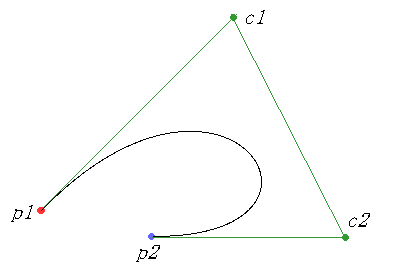

ベジェ曲線軌道
・ベジェ曲線軌道
前回のエルミート曲線軌道はこのようなものでした。

しかし、実はこのエルミート曲線には問題があります。
エルミート曲線は大体最短距離を描きます(p1→p2)
なので、大きく回り込むこんな曲線軌道は描けません。
そこで使うのがベジェ曲線です。
ベジェ曲線は始点・終点のほかに制御点を複数持ちます。
下の図では緑のc1,c2点が制御点です。

制御点はいくつあってもかまいませんが、その分演算回数が増えます。
なので、普通は制御点2個の3次ベジェ曲線を使います。
より複雑な曲線は3次ベジェ曲線を複数組み合わせて実現します。
p1→p2へ p2→p3へ
(制御点の位置が結構適当なのは御了承ください)
余談ですが、(c2,p2,c3)を一直線上に配置するとつなぎ目がきれいに描けます。
このように、ベジェ曲線は非常に自由度が高く、ペイント系ソフトやフォントの描画にも使われているようです。
・算出方法
ベジェ曲線は内分点計算を繰り返して求めます。
点 A(x1,y1) , B(x2,y2) として、
線分ABを m : n に内分する内分点をpとすると
と書けます。
前回と同じように、0で始点・1で終点をとるように0~1まで動く変数を用意します。
そして、各フーレムごとに内分する比率を変えながら点を求めていきます。
t が0~1まで動くとすると、tフレーム後の点 p は次の図の位置にあります。
具体的な演算方法としては、
- (p1→c1) , (c1→c2) , (c2→p2) を t : (1-t) に内分する点(緑線上の紫点)を求める。
- 上で求めた点を結ぶ線分をさらに t : (1-t) に内分する点(紫線上の紫点)を求める。
- その2点を結ぶ線分をさらに t : (1-t) に内分する点(黄点)が p となる。
と内分点だらけです（＾＾
コーディング的には前回よりも簡単になります。
・プログラムでの記述
コードを示します。
引数は( Point p1 , Point p2 , Point c1 , Point c2 ,int time)です。
//内分点を返す関数
Point inner_point(Point p1,Point p2,float m,float n){
return Point((n*p1.x+m*p2.x)/(m+n),(n*p1.y+m*p2.y)/(m+n));
}
Point p[4]={p1,c1,c2,p2};
float k=(float)cnt/time;
float m=k,n=1.0-k;
Point s1[3]={0,};
Point s2[2]={0,};
Point mp;
//1回目の内分点取得
for(int i=0;i<3;i++){
s1[i]="inner_point(p[i],p[i+1],m,n);
}
//2回目の内分点取得
for(int" i=0;i<2;i++){
s2[i]="inner_point(s1[i],s1[i+1],m,n);
}
//3回目の内分点(現在点)取得
mp=inner_point(s2[0],s2[1],m,n);
//現在の座標設定
x=mp.x;y=mp.y;
if(cnt">time)flag=false;
cnt++;
cntは毎フレーム増えるカウンタです。
内分点を返す関数をinner_pointとして実装しました。
この関数は線分p1→p2を m : n に内分する点を返します。
引数をpの配列でまとめて処理します。
s1に上の図でいう(緑線上の紫点)を取得します。
s2に上の図でいう(紫線上の紫点)を取得します。
mpが現在点です。これはs2を内分すればわかります(黄点)
・参考サイト様
外部リンクです
ベジェ曲線 - Wikipedia
Wikipediaのベジェ曲線のページです。
ちょっと詳しすぎてわかりづらいかも。
ベジェ曲線
内分の際の図がわかりやすいです。
図で十分なのか動画やアプレットなどの動きがあるものが見つかりませんでしたorz
あとはググってください。